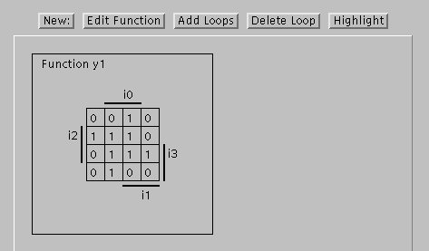
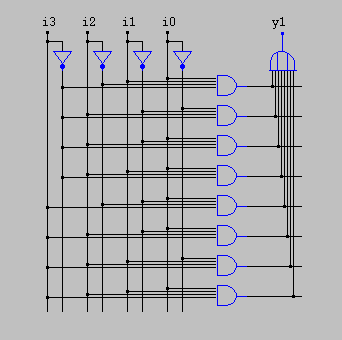
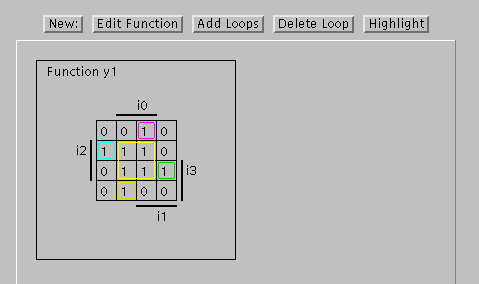
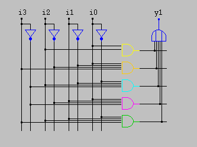
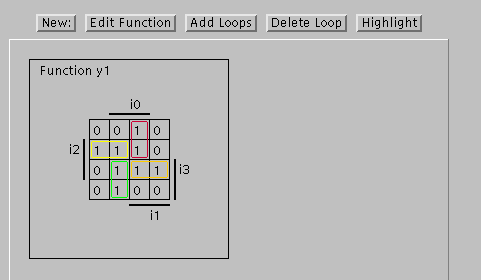
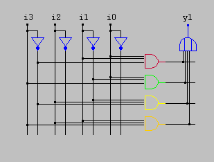

Java KV diagram demonstration - example 2
Before minimization
The following image shows the initial KV diagram and
the corresponding minterm circuit realization of the second example
boolean function.
The initial PLA needs eight AND-gates.
KV diagram before minimization:

Initial circuit realization:

Wrong minimization
While it is tempting to draw big loops first, this is not a good
idea for KV diagram minimization.
This example shows why.
After drawing the central four-loop first, we need four additional
one-loops (ok, or two-loops) to cover the other terms.
The resulting PLA needs five AND-gates.
KV diagram with loops:

Corresponding optimized circuit:

Correct minimization
If one starts with the smallest loops,
the optimal solution is evident.
This realization of the function only needs four AND-gates!
KV diagram with loops:

Optimized circuit:

All comments, hints and bug reports are welcome: Please contact
hendrich@informatik.uni-hamburg.de.